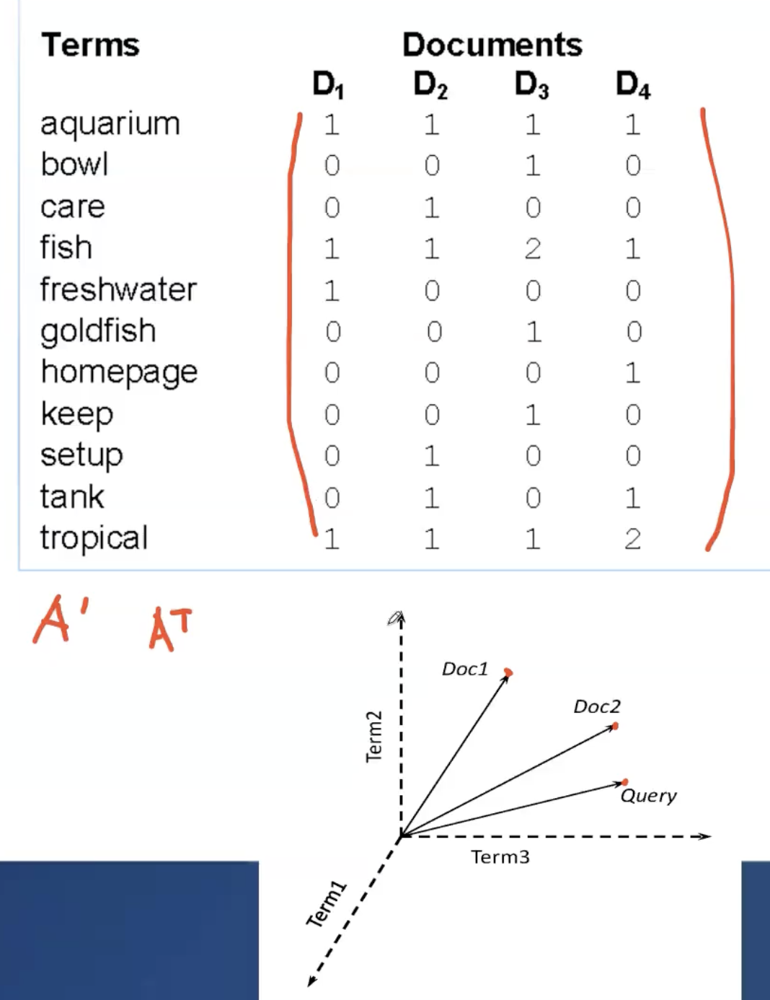
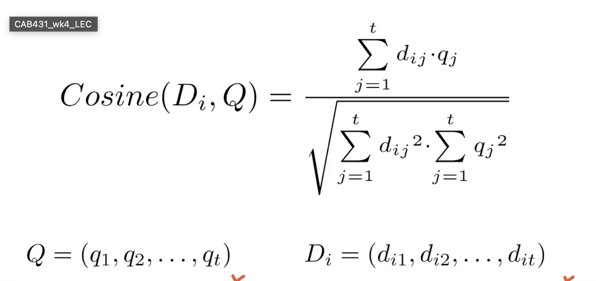

Hey guys. So a bit of a backstory – I am currently studying a unit (CAB431 Text and Web analysis) and I thought it would be a great idea to write a blog documenting everything important that I learn along the way.
Enjoy!
To start – it is no secret that textual information is ubiquitous and having a method of retrieving relevant documents and classifying them is crucial. This is what we will delve into in the first part. And let's not forget there are two ways to achieve this:
There are a few steps we need to follow when we are doing text‑analysis.
Things to watch out for:
v = k * nBv = number of unique wordsn = number of wordsB is between 0.5 and 1k is between 10 and 100Tokenization involves standardizing text by applying a set of rules, such as:
However, special rules need to be in place for cases where removing characters may affect the meaning (e.g., T‑Mobile). This step often includes:
Stemming reduces words to their root forms, addressing plural forms and tenses:
Many queries are phrases, typically consisting of two or more words. When processing these queries, we need to decide:
NN for singular noun).
dog/NN, cat/NNnltk.pos_tag(words) to get words with their corresponding tags.This step involves using the documents to create a set of indices. These indices help us to retrieve information faster during querying.
Type of Index
{"fox": ["doc1", "doc2"]}Some mark-up elements are more important than others:
This an important concept that measures the importance of a word within a document that is part of bigger collection, by taking in consideration the importance of the word in the bigger collection as well.
Term FrequencyThis measures how important a word is within a document. The basic intuition is that if a word appears in a document more then it is likely to be more important and relevant to that document.
TF(t, d) = log(number of times t appears in document d + 1
This measures the rearity of the term in other documents in the collection. The intuition is that a term occuring many times in other documents is less informative for a given document.
IDF(t) = log(total number of documents / number of documents containing term t)
The logrithmic scale ensures that that words that appear in all documents have less IDF value and words that appear in less documents
have more IDF value.
The core is that by multiplying these values we get the importance of a word in a given document. A high TF-IDF value indicates high relevance in a particular document and low relevance in other documents.
With non-normalised TF-IDF some documents can be longer and have more words than other documents. Since the occurrence of words can impact their importance, accounting for the lenth of the document can account for this factor.
sqrt(summation of all the weights ^ 2)
This step ensures that terms across different documents can be compared in a fair manner.
A mathmatical framework to retrieve information from a set of documents. For a given query, IR finds a set of documents that answers the query. There are various methods of IR:

We can workout the similarity using cosine: